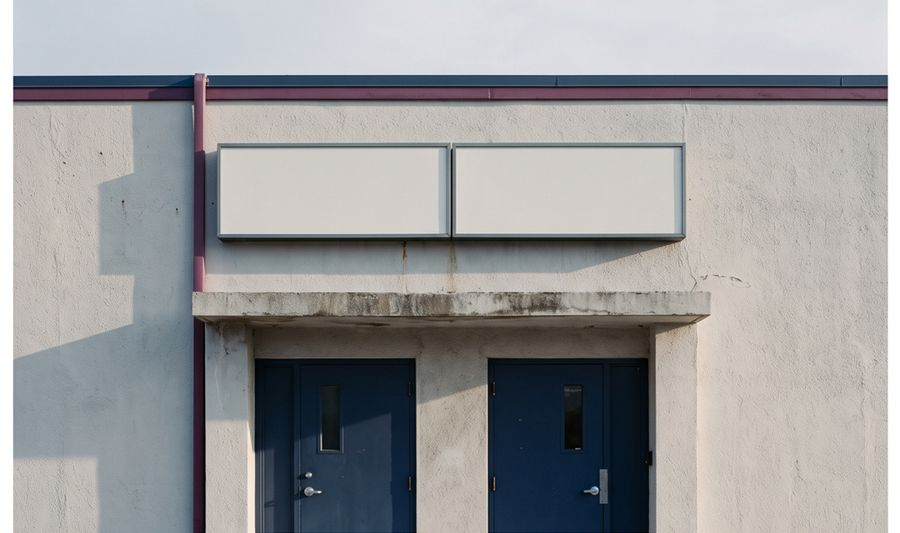

Advogado · OAB/CE 51.341 · Sobral, Ceará
Atuação consultiva e contenciosa em direito tributário e empresarial, com acompanhamento próximo da legislação recente e da jurisprudência dos tribunais e do CARF.
Análise da carga tributária de empresas e profissionais, enquadramento entre Simples Nacional, lucro presumido e lucro real, e acompanhamento da reforma tributária do consumo (IBS e CBS).
Defesa em autos de infração, recursos ao CARF e ao Contencioso Administrativo Tributário do Ceará, mandados de segurança, embargos à execução fiscal e transação com a PGFN.
Constituição e reorganização de sociedades, alterações contratuais, cessão de quotas, acordos entre sócios e contratos empresariais.
Estruturação de holdings patrimoniais, integralização de bens e organização da sucessão de quotas e do patrimônio familiar.
Leituras técnicas sobre normas e decisões que afetam empresas e profissionais.

Para consultas sobre a situação tributária ou societária de uma empresa, envie uma mensagem com um breve resumo do caso.